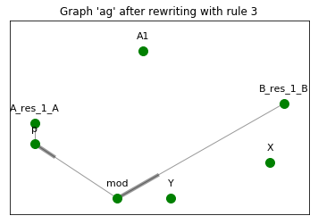

Tutorial¶
Tutorial: part 2¶
If you missed the part of the ReGraph tutorial about primitive graph transformations, advanced graph attributes and rewriting rules, go back to Tutorial: part 1.
Hierarchy¶
A graph hierarchy is a directed acyclic graph where nodes are graphs with attributes and edges are homomorphisms representing graph typing in the system. This construction provides means for mathematically robust procedures of propagation of changes (expressed through graph rewriting rules) on any level of the hierarchy, up to all the graphs which are transitively typed by the graph subject to rewriting. In the following section we give a simple example of such hierarchy and its functionality implemented in ReGraph (for more details see the module Hierarchy).
Hierarchy creation¶
Create an empty hierarchy and add graphs to the hierarchy:
import networkx as nx
from regraph import Hierarchy, plot_graph, primitives
hierarchy = Hierarchy()
t = nx.DiGraph()
primitives.add_nodes_from(
t, ["agent", "action", "state"])
primitives.add_edges_from(
t,
[
("agent", "agent"),
("state", "agent"),
("agent", "action"),
("action", "state")
])
g = nx.DiGraph()
primitives.add_nodes_from(
g,
["protein", "region",
"activity", "mod"])
primitives.add_edges_from(
g,
[
("region", "protein"),
("activity", "protein"),
("activity", "region"),
("protein", "mod"),
("region", "mod"),
])
hierarchy.add_graph("T", t)
hierarchy.add_graph("G", g)
>>> plot_graph(hierarchy.graph["T"])
>>> plot_graph(hierarchy.graph["G"])
>>> hierarchy.graphs()
['T', 'G']
Add typing of the graph G by T:
mapping = {
"protein": "agent",
"region": "agent",
"activity": "state",
"mod": "action"
}
hierarchy.add_typing("G", "T", mapping)
>>> hierarchy.typing["G"]["T"]
{'activity': 'state', 'mod': 'action', 'protein': 'agent', 'region': 'agent'}
You can check typing of a particular node of a graph, for example:
>>> hierarchy.node_type("G", "region")
{'T': 'agent'}
Create another graph, let’s call it model, and type it by G
model = nx.DiGraph()
primitives.add_nodes_from(
model,
["A", "R", "B", "B_activity",
"A_activity", "activation"])
primitives.add_edges_from(model, [
("R", "A"),
("R", "activation"),
("activation", "B_activity"),
("B_activity", "B"),
("activation", "A_activity"),
("A_activity", "A")
])
hierarchy.add_graph("model", model)
mapping = {
"A": "protein",
"R": "region",
"B": "protein",
"B_activity": "activity",
"A_activity": "activity",
"activation": "mod"
}
hierarchy.add_typing("model", "G", mapping)
plot_graph(hierarchy.graph["model"])
>>> hierarchy.typings()
[('G', 'T'), ('model', 'G')]
Remove a node from the hierarchy and reconnect its predecessors with its successors:
>>> hierarchy.remove_node("G", reconnect=True)
>>> hierarchy.typings()
[('model', 'T')]
>>> hierarchy.typing["model"]["T"]
{'A': 'agent',
'B': 'agent',
'B_activity': 'state',
'A_activity': 'state',
'R': 'agent',
'activation': 'action'}
Graph hierarchy allows to accommodate binary symmetric relations on graphs. Consider the following graph:
catalysis = nx.DiGraph()
primitives.add_nodes_from(
catalysis,
["enzyme", "substrate",
"mod", "mod_state"]
)
primitives.add_edges_from(catalysis, [
("enzyme", "mod"),
("mod", "mod_state"),
("mod_state", "substrate")
])
hierarchy.add_graph("catalysis", catalysis)
plot_graph(hierarchy.graph["catalysis"])
Create a relation between graph model and graph catalysis:
relation = {
"A": {"enzyme", "substrate"},
"B": "substrate",
"B_activity": "mod_state",
"A_activity": "mod_state",
"activation": "mod"
}
hierarchy.add_relation('model', 'catalysis', relation)
Note that in a relation between two graphs a node from one graph can be related to a set of nodes from another graph (in our example node ‘A’ in the graph model is related to both ‘enzyme’ and ‘substrate’ from the graph catalysis):
>>> hierarchy.relation['model']['catalysis']
{'A': {'enzyme', 'substrate'},
'A_activity': {'mod_state'},
'B': {'substrate'},
'B_activity': {'mod_state'},
'activation': {'mod'}}
>>> hierarchy.relation['catalysis']['model']
{'enzyme': {'A'},
'mod': {'activation'},
'mod_state': {'A_activity', 'B_activity'},
'substrate': {'A', 'B'}}
This example can be found in the following script.
Rewriting in the hierarchy¶
This section of the tutorial covers rewriting in a graph hierarchy. Rewriting a single graph in a hierarchy triggers a set of updates to other graphs and homomorphisms. Here we give a simple example and illustrate a usecase of such rewriting and how it can be peformed using ReGraph.
First, let’s start from creating another hierarchy similar to the one in the previous example:
import networkx as nx
from regraph import Hierarchy, Rule, RewritingError
from regraph import primitives
from regraph import plotting
hierarchy = Hierarchy()
# Initialize graphs
colors = nx.DiGraph()
primitives.add_nodes_from(
colors, ["red", "blue"])
primitives.add_edges_from(
colors,
[("red", "red"), ("blue", "red"), ("red", "blue")])
mmm = nx.DiGraph()
primitives.add_nodes_from(
mmm, ["component", "state", "action"])
primitives.add_edges_from(
mmm,
[("component", "action"),
("component", "component"),
("state", "component"),
("action", "state")])
mm = nx.DiGraph()
primitives.add_nodes_from(
mm, ["gene", "residue", "state", "mod"])
primitives.add_edges_from(
mm,
[("residue", "gene"),
("state", "gene"),
("state", "residue"),
("mod", "state"),
("gene", "mod")
])
action_graph = nx.DiGraph()
primitives.add_nodes_from(
action_graph, ["A", "A_res_1", "p", "B", "mod"])
primitives.add_edges_from(
action_graph,
[("A_res_1", "A"),
("p", "A_res_1"),
("mod", "p"),
("B", "mod")])
nugget_1 = nx.DiGraph()
primitives.add_nodes_from(
nugget_1, ["A", "A_res_1", "p", "B", "mod"])
primitives.add_edges_from(
nugget_1,
[("A_res_1", "A"),
("p", "A_res_1"),
("mod", "p"),
("B", "mod")])
# Add graphs to the hierarchy
hierarchy.add_graph("colors", colors)
hierarchy.add_graph("mmm", mmm)
hierarchy.add_graph("mm", mm)
hierarchy.add_graph("ag", action_graph)
hierarchy.add_graph("n1", nugget_1)
# Add typings to the hierarchy
hierarchy.add_typing(
"mm", "mmm",
{
"gene" : "component",
"residue": "component",
"state": "state",
"mod": "action"
})
hierarchy.add_typing(
"mm", "colors",
{
"gene": "red",
"residue": "red",
"state": "red",
"mod": "blue"
})
hierarchy.add_typing(
"ag", "mm",
{
"A": "gene",
"B": "gene",
"A_res_1": "residue",
"mod" : "mod",
"p": "state"
})
hierarchy.add_typing(
"n1", "ag",
dict((n, n) for n in nugget_1.nodes()))
Let’s plot the graphs of the hierarchy that we’ve just created:
>>> plotting.plot_graph(hierarchy.graph["colors"])
>>> plotting.plot_graph(hierarchy.graph["mmm"])
>>> plotting.plot_graph(hierarchy.graph["mm"])
>>> plotting.plot_graph(hierarchy.graph["ag"])

>>> plotting.plot_graph(hierarchy.graph["n1"])
Now, we would like to rewrite the graph ag with the rule defined below:
# define a rule that clones nodes
pattern = nx.DiGraph()
primitives.add_nodes_from(pattern, ["gene", "residue"])
primitives.add_edges_from(pattern, [("residue", "gene")])
cloning_rule = Rule.from_transform(pattern)
clone_name, _ = cloning_rule.inject_clone_node("gene")
cloning_rule.inject_remove_edge("residue", clone_name)
plotting.plot_rule(cloning_rule)
This rule clones a node with id ‘gene’ of the pattern and removes an edge from the node ‘residue’ to the cloned node. Define a typing of the left-hand side of the rule and find all its matchings in ag:
lhs_typing = {
"mm": {"gene": "gene", "residue": "residue"}
}
instances = hierarchy.find_matching(
"ag", cloning_rule.lhs, lhs_typing)
for instance in instances:
plotting.plot_instance(
hierarchy.graph["ag"], cloning_rule.lhs, instance)
Perform the rewriting:
>>> _, rhs_instance = hierarchy.rewrite("ag", cloning_rule, instances[0])
Now, we can plot updated ag:
>>> plotting.plot_instance(hierarchy.graph["ag"], cloning_rule.rhs, rhs_instance,
parent_pos=ag_pos)
As the result of the rewriting of ag, the graph n1 typed by ag has changes (clones and removes were propagated to it as well):
>>> plotting.plot_graph(hierarchy.graph["n1"],
title="Graph 'n1' after rewriting with rule 1", parent_pos=n1_pos)
>>> hierarchy.typing["n1"]["ag"]
{'A': 'A1',
'A_res_1': 'A_res_1',
'p': 'p',
'B': 'B',
'mod': 'mod',
'A1': 'A'}
>>> hierarchy.typing["ag"]["mm"]
{'A': 'gene',
'A_res_1': 'residue',
'p': 'state', 'B': 'gene',
'mod': 'mod',
'A1': 'gene'}
Now consider the following rule and its instance in n1:
p = nx.DiGraph()
primitives.add_nodes_from(p, ["B"])
l = nx.DiGraph()
primitives.add_nodes_from(l, ["B"])
r = nx.DiGraph()
primitives.add_nodes_from(r, ["B", "B_res_1", "X", "Y"])
primitives.add_edge(r, "B_res_1", "B")
adding_rule = Rule(p, l, r)
plotting.plot_rule(adding_rule)
instance = {"B": "B"}
plotting.plot_instance(
hierarchy.graph["n1"], adding_rule.lhs, instance,
title="Graph 'n1' with the instance of a pattern highlighted")
As can be seen on the figures above, our rule adds three new nodes to the graph n1 (i.e., ‘B_res_1’, ‘X’, ‘Y’) and connects with an edge ‘B’ (of the initial pattern) and ‘B_res_1’.
We can also define a typing for new nodes that will be created by the rule, and it can be done by providing a typing of the right-hand side of the rule by hierarchy graphs:
rhs_typing = {
"mm": {"B_res_1": "residue"},
"mmm": {"X": "component"},
"colors": {"Y": "red"}
}
The typing defined by this dictionary can be interpreted as follows: “graph mm types the node ‘B_res_1’ from the right-hand side with the node ‘residue’, graph mmm types the node ‘X’ as ‘component’, and graph colors types ‘Y’ as ‘red”.
By default rewriting in a hierarchy (implemented in the regraph.Hierarchy.rewrite method) is not strict, i.e. it is allowed to apply rewriting rules which perform relaxing changes to the hierarchy graphs (add nodes/edges/attrs or merge nodes). But the previously mentioned rewriting method allows to set its input argument strict=True, in which case an attempt to apply any relaxing rule will lead to an exception (regraph.RewritingError).
Let’s rewrite n1 with the rule using defaut non-strict rewriting:
>>> _, rhs = hierarchy.rewrite("n1", adding_rule, instance, rhs_typing=rhs_typing)
Let’s have a look on the changes to the hierarchy that were triggered by the rewriting:
>>> plotting.plot_instance(hierarchy.node["n1"].graph, rule.rhs, rhs_instance)
On the figure above we can see that we successfully created new nodes in n1. Now let us observe the changes in ag:
>>> plotting.plot_graph(hierarchy.graph["ag"])

As a typing by the nodes of ag of the new nodes in n1 was not specified, three new respective nodes are added to ag by the rewriting procedure, so that n1 becomes typed by ag as follows:
>>> hierarchy.typing["n1"]["ag"]
{'A': 'A',
'A_res_1': 'A_res_1',
'B': 'B',
'B_res_1': 'B_res_1',
'X': 'X',
'Y': 'Y',
'mod': 'mod',
'p': 'p'}
Now what about the meta-model graph mm?
>>> plotting.plot_graph(hierarchy.graph["mm"])
We can see that the nodes ‘X’ and ‘Y’ where added to mm as their typing by mm was again not specified in rhs_typing. On the contrary, the node ‘B_res_1’ was typed by the node ‘residue’ in the meta-model, which can be seen in the updated typing of ag by mm:
>>> hierarchy.typing["ag"]["mm"]
{'A': 'gene',
'A_res_1': 'residue',
'B': 'gene',
'B_res_1': 'residue',
'X': 'X',
'Y': 'Y',
'mod': 'mod',
'p': 'state'}
Similarly, we can observe in the graph mmm the new node ‘Y’ added (by rhs_typing the node ‘X’ was sent to the node ‘component’ of mmm).
>>> plotting.plot_graph(hierarchy.graph["mmm"])
>>> hierarchy.typing["mm"]["mmm"]
{'X': 'component',
'Y': 'Y',
'gene': 'component',
'mod': 'action',
'residue': 'component',
'state': 'state'}
Finally, in the graph colors the new node ‘X’ is added (again, by rhs_typing the node ‘Y’ was sent to the node ‘red’ of colors).
>>> plotting.plot_graph(hierarchy.graph["colors"])

>>> hierarchy.typing["mm"]["colors"]
{'X': 'X',
'Y': 'red',
'gene': 'red',
'mod': 'blue',
'residue': 'red',
'state': 'red'}
Now consider yet another example of a rule and its application which leads to some propagation of changes. This time consider the following rule which performs merge of some nodes:
pattern = nx.DiGraph()
pattern.add_nodes_from([1, 2])
pattern.add_edges_from([(2, 1)])
merging_rule = Rule.from_transform(pattern)
merging_rule.inject_remove_edge(2, 1)
merging_rule.inject_merge_nodes([1, 2], "hybrid")
plotting.plot_rule(merging_rule, title="Rule 3: contains merge of nodes")
We define the typings of its left-hand side and its right-hand side, and we search for instances in the graph n1:
lhs_typing = {"mm": {1: "gene", 2: "residue"}}
rhs_typing = {"mmm": {"hybrid": "component"}}
instances = hierarchy.find_matching("n1", merging_rule.lhs, lhs_typing)
for instance in instances:
plotting.plot_instance(hierarchy.graph["n1"], merging_rule.lhs, instance)
We can see that there were found exactly two instances of the left-hand side of the rule (i.e. the gene node ‘B’ together with the residue node ‘B_res_1’ connected to it and the gene node ‘A’ together with the residue node ‘A_res_1’). Now, let’s apply the merging rule to all the instances:
for instance in instances:
hierarchy.rewrite("n1", merging_rule, instance, rhs_typing=rhs_typing)
plot_graph(hierarchy.node["n1"].graph,
title="Graph 'n1' after rewriting with rule 3")
Changes that were made to ag:
>>> hierarchy.typing["n1"]["ag"]
{'A': 'A1',
'p': 'p',
'mod': 'mod',
'X': 'X',
'Y': 'Y',
'A1_A_res_1': 'A_res_1_A',
'B_B_res_1': 'B_res_1_B'}
This is how our meta-model mm looks like after rewriting:

Nodes ‘residue’ and ‘gene’ were merged in mm. Now updated typing of ag by mm is following:
>>> hierarchy.typing["ag"]["mm"]
{'p': 'state',
'mod': 'mod',
'A1': 'residue_gene',
'X': 'X',
'Y': 'Y',
'A_res_1_A': 'residue_gene',
'B_res_1_B': 'residue_gene'}
The new ‘hybrid’ node (i.e. ‘residue_gene’) is typed by the node ‘component’ of mmm:
>>> hierarchy.typing["mm"]["mmm"]["residue_gene"]
'component'
This example can be found in the following script.